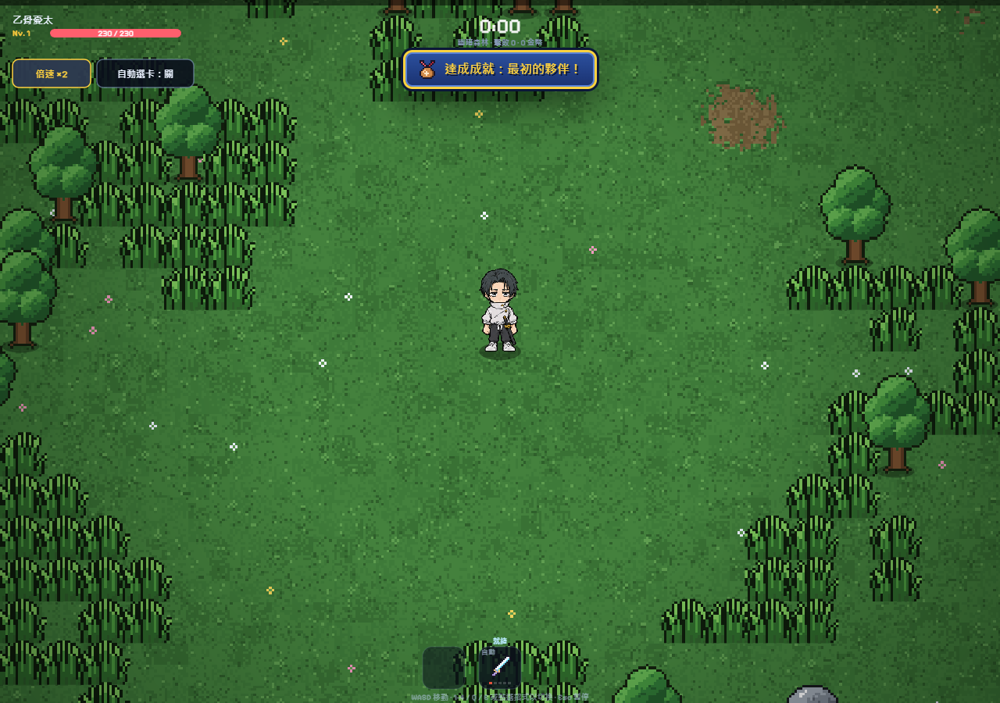
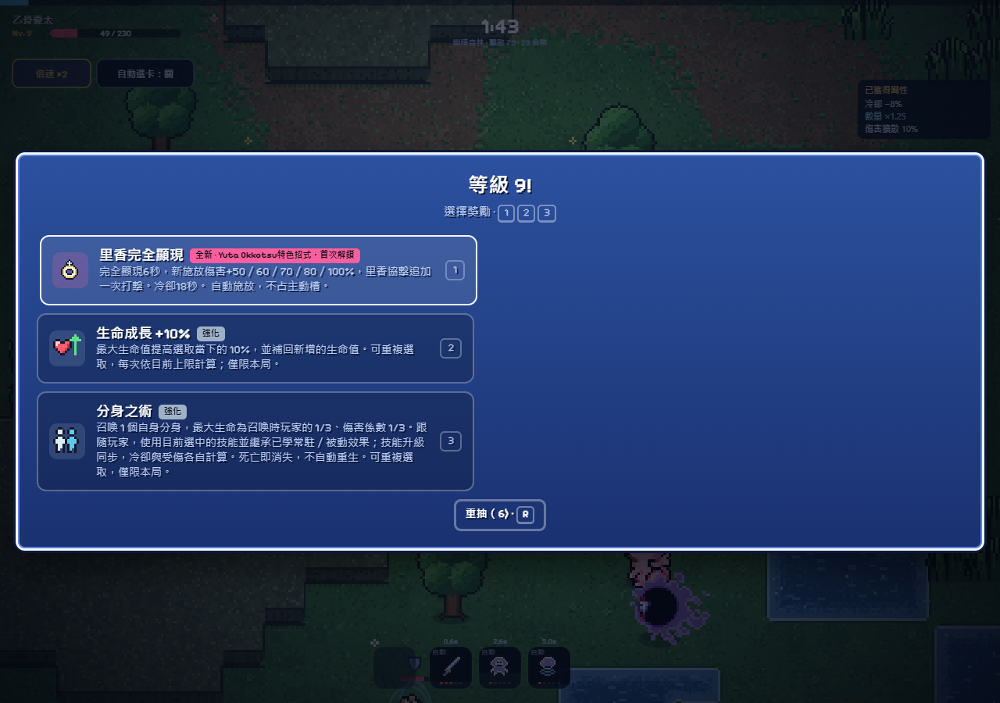

四方獨立設計 · 動漫與美術席 · 第一輪，尚未互評
讓走位、選卡與出手意圖可見
此頁是提案簡報。下方實際截圖來自現有版本，路線規格是尚未實作的設計；不混稱成品。
乙骨／里香
近身接力 ↔ 離身游擊
刀術先標記精英，里香接棒；或把里香派往遠處威脅，自己回收經驗。一次選卡決定偏好與代價。
刀斬起手真實接觸里香追擊回身空檔
角色本體、白甲殼與手部姿勢要原畫；刀痕、標記與短裂紋可程序化。
石流
穿線狙擊 ↔ 散射壓制
一條長線要求排位；寬扇面要求覆蓋角度。數量卡影響覆蓋，不應同次對同敵多倍打擊。
額頭壓縮接觸砲線外殼退散身體後座
頭部輪廓和後座要原畫；路徑裁切、相干外殼與尾光交給程式。
烏鷺
反制獵手 ↔ 裂面清群
來襲飛彈提供反制時機；碎面流則用較短、較寬的覆蓋逼玩家接近。保持近戰弱點。
抓取空面拉出折角接觸碎開回復
手與肩要原畫；背景裁片變形、折面接縫、有限碎片適合演算法。當前實際觀察
自己從正常入口走位約一分鐘，103遊戲秒到Lv.9。結束停在完全顯現的選卡畫面，尚未取得該技；這不是已成形20級局。

正常一級開局
Lv.9解鎖機會，仍需花一次選卡學會原作辨識與遊戲畫面
 本機研究對照；官方參考不是遊戲執行素材。
本機研究對照；官方參考不是遊戲執行素材。 已檢視的現有原生短片取樣：能檢查姿勢與遮擋，不能替代完整圍攻實玩。
已檢視的現有原生短片取樣：能檢查姿勢與遮擋，不能替代完整圍攻實玩。交給特效工程師的共同契約
同一castId、同一owner、同一模擬時鐘、同一來源點與接觸事件。傷害系統決定碰撞；視覺層解釋它，不能自行創造另一輪命中。
最低畫質仍需保留來源、方向、接觸時刻；先降低裝飾，不取消危險資訊。無新增美術或程式特效在本頁冒充完成。
完整獨立提案 · 原始實玩讀值 · 來源與驗收清單